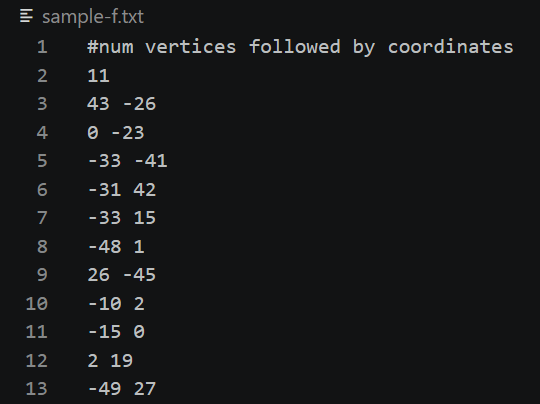
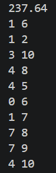
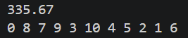
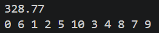

Michigan Neuroprosthetics Website
Why This Project
When the software leads reached out to the team asking who would take on the challenge of building a new website from scratch, I was the first to volunteer. The existing site hadn't been touched since 2021 and consisted of broken links, dated design, and technical gaps. I saw it as the perfect opportunity to take full ownership of a project and build something modern that actually represents what Michigan Neuroprosthetics does today.
Getting Started
To ensure the new site met the organization's goals, I initiated weekly consultations with the Outreach Lead to define core requirements. As the sole developer on the project, I was responsible for selecting a sustainable tech stack. Having no previous experience with web-dev, I did some research on different approaches. I chose Python/Flask for the backend (leveraging my existing Python proficiency to build a stable architecture) and HTML/CSS for the frontend. This approach was the perfect balance of technical rigor with a manageable and exciting learning curve.
Current Implementation & Progress
Architecture
I began the development process by establishing the site's "skeleton," a navigation system and routing architecture to ensure a seamless traversal between pages. By mapping out the page hierarchy early, I resolved the broken navigation issues of the previous site and created a functional framework for the rest of the project.
Frontend
With the architecture in place, I shifted focus to the Home Page. Throughout the design process, I have been conciously prioritizing standardized color schemes, fonts, and assets to create a professional, modern aesthetic, as well as ensuring every interactive element is responsive and serves a clear purpose.
Next Steps
My next priority is meeting with the leads of all subteams to gather project-specific data that will be necessary for the other pages of the site. This is to ensure that each subteam's contributions are accurately and sufficiently portrayed before official launching the site.
Once the core content is live, I plan to experiment with some more advanced CSS animations and interactive elements, such as scroll-triggered reveals, hover-state gradients, and micro-interactions to buttons. This will lend to a more engaging user experience.
Example Execution 1:
Settings: QUEUE water traversal, STACK land traversal, NWSE priority, Map path display
Input File

Output File

Example Execution 2:
Settings: STACK water traversal, QUEUE land traversal, EWSN priority, List path display
Input File

Output File

Project 2: Zombie Attack
Efficient and optimal algorithm implemented to prioritize zombie killing based on their unique srengths, speeds, and relative distances. Several rounds played until all zombies killed or zombies kill player.
Key Technical Features:
- Priority queue used to prioritize zombie killing
- New zombies created both directly as specified by input file and also through random generations
- Manages user input through command line arguments for level of verbosity of output
Example Execution 1:
Input File

Terminal Output

Example Execution 2:
Input File

Terminal Output

Project 3: Data Management System
Several tables of data managed and manipluated based on input file. Operations inlude creating new tables, inserting/deleting/printing data from existing tables, joining distinct tables based matching values of selected columns, and generating a search index (hash or BST) on a selected column of a table.
Key Technical Features:
- Design of custom table data structure for efficient storage
- Maps and unordered maps used to create BST and hash indexes
- Error handling for duplicate table names, attempted access to non-existent tables/columns, and unrecognized commands
Example Execution:
Input File

Terminal Output

Project 4: Graph Traversals
Finds either the minimum spanning tree or an efficient solution to the Traveling Salesperson Problem given a graph as a list of vertices. For increased complexity, movement from the first to third quadrant (or vice versa) is prohibited.
Key Technical Features:
- Prim's algorithm implemented to find the minimum spanning tree
- 2-Opt local search heuristic impltemented for TSP if time efficiency is chosen as priority
- Branch and Bound algorithm implemented for TSP if optimal solution is chosen as priority
Example Execution:
Input File

Output 1

Finds MST of graph and displays list of edges as node pairs
Output 2

Finds "good enough" solution to TSP within O(N2) time complexity
Output 3

Finds optimal solution to TSP